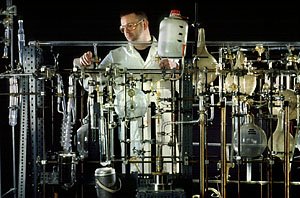
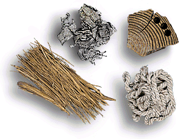

Radiocarbon Dating

By measuring how much 14C remains in
ancient organic materials, it is possible to calculate how long
ago they died. To do this requires extensive chemical processing,
carried out in laboratories like that of the British Museum, to
convert the carbon in the ancient objects to a form in which the
very low level radioactivity (way below background levels) can be
measured.
This is the equipment used to date the bone in
the Museum's laboratories. Using this glassware we extracted some
of the carbon from the man's leg and measured the amount of radioactivity
it contained. From this, using radiocarbon dating, we were able
to tell that the man died between 2330 and 2130 BC, or just over
4000 years ago, at a time when pyramids were still being built in
Egypt.
Most
radiocarbon dating is carried out on bone or charcoal, as these
are the organics that most frequently survive from the past, but
many other materials, like the ancient Egyptian rope, mummy wrappings
and reeds shown here, can also be dated using this technique.
Radiocarbon dating:Further Reading
Investigate another object?
|